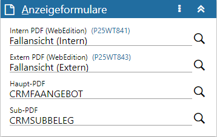

Definitionsbereich - Anzeigeformulare
Über den Bereich der Anzeigeformulare wird die Darstellung der Fallansicht gesteuert.

Ø Kopfzeile
In der Kopfzeile des Bereichs wird die Bezeichnung "Anzeigeformulare" angezeigt.
Achtung
Handelt es sich um einen Workflow-, End- oder Nebenschritt, welcher von einem Musterschritt abgeleitet wurde, so wird diese Verbindung ebenfalls in der Kopfzeile dargestellt.
Ø  Menü
Menü
Durch Anwahl des Menüs werden, abhängig vom aktuell gewählten Workflow-Objekt, weitere Funktionen zur Verfügung gestellt:
ü Entsperren / Sperren
Handelt es
sich um einen Workflow-, End- oder Nebenschritt, welcher von einem Musterschritt
abgeleitet wurde, so kann hier definiert werden, ob die Feldinhalte fix vom
Musterschritt kommen oder editierbar sein sollen.
ü Maximieren / Minimieren
Bei
einem Maximieren werden die Anzeigeformulare als einziger Bereich in der
Definition angezeigt, bzw. bei einem Minimieren wieder alle Bereiche in der
Definition.
Ø Intern / Extern PDF (WebEdition)
Bei Workflow-Gruppen oder einem Startschritte besteht die Möglichkeit ein Formular für die Darstellung des Workflows-Falles in der WebEdition zu hinterlegen. Hierbei wird zwischen "internen" oder "externen" Benutzer unterschieden.
ü Externe Benutzer
Externe
Benutzer sind WinLine Benutzer der Benutzergruppen "10 - Surfer", "11 -
Interessenten" und "12 - Debitoren".
ü Interne Benutzer
Interne
Benutzer sind alle Benutzer aller restlichen (nicht externen)
Benutzergruppen.
Bestehende Formulare können über den Matchcode gesucht und ausgewählt werden. Zum gewählten Formular wird die entsprechende Formularname in Klammern neben dem Namen des Eingabefelds angezeigt.
Ø Haupt-PDF / Sub-PDF
Bei Workflow-Gruppen bzw. Startschritten besteht die Möglichkeit ein Formular für die Darstellung der CRM-Fallansicht in der WinLine bzw. WinLine mobile zu hinterlegen. Hierbei wird zwischen dem Haupt-Formular (mit den Basisinformationen) und dem SUB-Formular (für die Darstellung der einzelnen Schritte) unterschieden.
Bei einzelnen Workflowschritten kann wiederum ein abweichendes SUB-Formular hinterlegt werden; das Haupt-Formular stammt immer vom Startschritt.
Bestehende Formulare können über den Matchcode gesucht und ausgewählt werden.
Hinweis
Wird ein Fall abgeleitet und dazu ein neuer Schritt geschrieben (Aktion "2 - Splitte Fall" und Aktion "6 - Schreibe Workflowschritt"), so wird für die Fallansicht des "neuen" Falles jenes Sub-Formular herangezogen, welches im Startschritt des "neuen" Falles hinterlegt ist. Ist hierbei kein eigenes Sub-Formular angegeben, so wird jenes Sub-Formular verwendet, welches beim Workflowschritt hinterlegt von dem der Fall abgeleitet wurde.